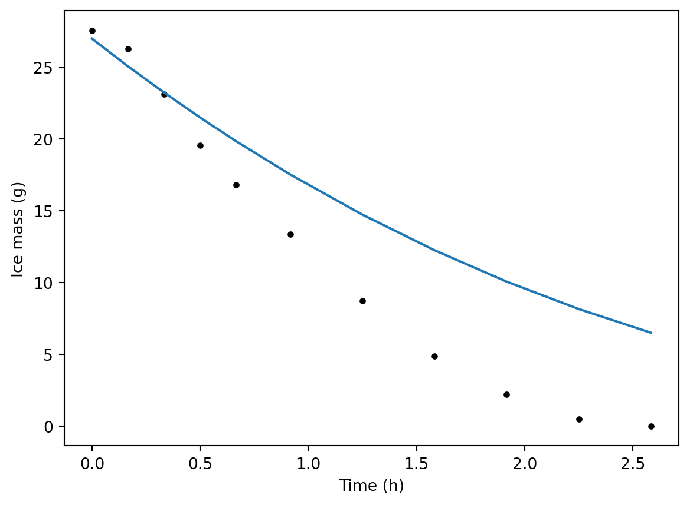

# Python packages
import numpy as np
import matplotlib.pyplot as plt
from importlib import reload
import pandas as pd
import sys
sys.path.append('modules')
# Our module
import ice_mods as im10 Parameter Estimation
Parameter estimation is about determining (estimating) the “best” (ideally, the most accurate) parameter values for a model based on comparing model output and measurements. It is related to model validation.
10.1 Melting ice model example
Let’s load the model.
Let’s get some real measurements. These are actually real–made on a dining table a year or two ago. Mass is in g. These were initially small ice cubes.
meas = pd.read_csv("data/ice/ice_mass.csv")
meas
# Get time in the right units.
meas["time_sec"] = meas["time_min"] * 60.
# And some for plotting
meas["time_hr"] = meas["time_min"] / 60.
# And ice ice in kg
meas["ice_kg_1"] = meas["ice_g_1"] / 1000.
meas["ice_kg_2"] = meas["ice_g_2"] / 1000.We need to have measurements and predictions at the same times in order to quantify model fit. The best approach to have a model function that returns specified times. Here is the original model, which returns evenly spaced times.
"""
File name: melt_mods.py
Author: Sasha D. Hafner
Course: Modelling 2026
Description:
This module defines a numerical model for disappearance of a
melting block of ice. Assumes hemispherical shape and no heat
transfer through bottom.
Usage:
See the melt_demo.py file for examples.
"""
# Load packages
import pandas as pd
import numpy as np
from scipy.integrate import solve_ivp
# Define model function
def melt(mass_0,
temp_air,
h,
t_range,
t_step,
dens = 920,
temp_freeze = 0,
Hf = 333000
):
"""
Dynamic model for heat transfer to a melting block of ice, with
disappearance of the ice over time.
Parameters
----------
mass_0 : float
Initial mass of ice (kg)
temp_air : float
Air temperature (deg. C)
h : float
Convection heat transfer coefficient (W/m2-K)
t_range : list or tuple of two floats
Minimum and maximum time in output (s)
t_step : float
Time step in output (s)
dens : float
Ice density (kg/m3)
temp_freeze : float
Freezing point (deg. C)
Hf : float
Heat of fusion (J/kg)
Returns
-------
dictionary
With elements 't' for time (s) and 'm' for ice mass remaining (kg)
"""
# Define rates function
def rates(t, mass_t):
# Get current exposed upper area, assuming hemisphere
area = 1/2 * np.pi * (3 * mass_t / (2 * np.pi * dens))**(2/3)
# Heat flow (W)
Q = area * h * (temp_air - temp_freeze)
# Melting rate (kg/s)
dmdt = - Q / Hf
return dmdt
res = solve_ivp(
rates,
t_span = t_range,
y0 = [mass_0],
t_eval = np.arange(t_range[0], t_range[1] + t_step, t_step)
)
# Return user-friendly results object (dictionary here)
out = {
"t": res.t,
"m": res.y[0, :]
}
return outWe’ll change the original one. In this version, there is a single times argument.
def melt2(mass_0,
temp_air,
h,
times,
dens = 920,
temp_freeze = 0,
Hf = 333000
):
"""
Dynamic model for heat transfer to a melting block of ice, with
disappearance of the ice over time. This version accepts a single
times input, unlike the original above.
Parameters
----------
mass_0 : float
Initial mass of ice (kg)
temp_air : float
Air temperature (deg. C)
h : float
Convection heat transfer coefficient (W/m2-K)
times : list or tuple or array
time in output (s)
dens : float
Ice density (kg/m3)
temp_freeze : float
Freezing point (deg. C)
Hf : float
Heat of fusion (J/kg)
Returns
-------
dictionary
With elements 't' for time (s) and 'm' for ice mass remaining (kg)
"""
# Define rates function
def rates(t, mass_t):
if mass_t < 0:
mass_t = 0
# Get current exposed upper area, assuming hemisphere
area = 1/2 * np.pi * (3 * mass_t / (2 * np.pi * dens))**(2/3)
# Heat flow (W)
Q = area * h * (temp_air - temp_freeze)
# Melting rate (kg/s)
dmdt = -Q / Hf
return dmdt
res = solve_ivp(
rates,
t_span = [min(times), max(times)],
y0 = [mass_0],
t_eval = times
)
# Return user-friendly results object (dictionary here)
out = {
"t": res.t,
"m": res.y[0, :]
}
return outSo that is the software model we will work with. When calling it, we can extract the times from the measurement data frame meas and pass them right to the model function. Here is a demo with a reasonable value for the heat transfer coefficient \(h\) for free convection.
reload(im)
pred01 = im.melt2(
mass_0 = 0.027,
temp_air = 24,
h = 50,
times = meas.time_sec
)
pred01{'t': array([ 0., 600., 1200., 1800., 2400., 3300., 4500., 5700., 6900.,
8100., 9300.]),
'm': array([0.027 , 0.02507369, 0.02324109, 0.02149973, 0.01984747,
0.01753135, 0.01473416, 0.01225226, 0.01006597, 0.00815625,
0.00650479])}Let’s plot measurements and model output together for simple validation.
plt.plot(meas.time_hr, meas.ice_g_1, "k.")
plt.plot(pred01["t"] / 3600, 1000 * pred01["m"])
plt.xlabel("Time (h)")
plt.ylabel("Ice mass (g)")Text(0, 0.5, 'Ice mass (g)')
It looks like the model underestimates the melting rate, at least with that value for \(h\). For a higher rate we need a higher value of \(h\). We could manually try a higher value, plot results again, and continue this cycle until we are happy with the visual validation of the model. But to automate parameter estimation and for reproducible and defensible estimates, we need to quantify model fit.
Get sum of squared residuals
sum((meas.ice_g_1 - 1000 * pred01["m"])**2)285.4777947209740310.2 Problems
This exercise is based on the model from the second mini-project. You can load the model function from the O2dc_mods module included in this directory. The model function is O2dc() and you can find a demo in the class 19 solution directory. Work through the demo if needed to understand inputs and outputs.
The 1D model was developed for diffusion-controlled oxygen and organic matter (OM) transport in a wastewater polishing lagoon. However, it may be reasonable to apply to model to cases where transport is enhanced by mixing, as long as most of the resistance to transport remains in the water column (not the air)and the mass transfer parameter D is not too large.
Measurements are available from a 1 m deep lagoon and will be used for parameter estimation. The wastewater initially had a degradable organic matter (OM) concentration of 10 mg/L, initial oxygen 8 mg/L, and the system is run in batch mode. The file meas_O2.csv has measurements of dissolved oxygen concentration at the bottom of the lagoon at a daily frequency. The concentration of OM in a sample from around 50 cm deep is in the file meas_OM.csv at a roughly 1 week frequency. These measurements are made up, but could reflect the ease of making electrode-based measurements of dissolved oxygen and a more complicated analysis for OM (e.g., biochemical oxygen demand (BOD) incubation).
Assuming a reaction rate around 1E-4 m3/kg-s and that mass transfer is completely diffusion-controlled (see
parameter_values.mdif you need help coming up with a value), carry out a graphical validation of the model for both oxygen and OM. Come up with a hypothsis for any differences you observe between measurements and model output.Use
least_squares()to estimate values for the (apparent) diffusivity and reaction rate (two parameters) based on the oxygen measurements. It might be a good idea to change the model function so it accepts arbitrary times instead oftmaxandnt.Repeat the process, but this time use the OM concentrations. Compare to the previous estimates.
Optional: Use both sets of measurements simultaneously for parameter estimation and compare the estimated values to what you got above. Use weights to ensure that each of the observed variables contributes equally to the parameter estimates, considering the lower sampling frequency of the OM measurements. Check out the
lossparameter for theleast_squares()function and try a setting that minimized the influence of outliers (extreme values). Do the parameter estimates change much?Optional: What values would you ultimately recommend for these parameters based on the available measurements? Are these results consistent with your hypothesis from 1?
10.2.1 Some tips
- Remember to try different starting values.
- Do you need different values for
Dfor the two solutes? - Use
print()calls in your residuals function to see what the values of the parameter guesses (or residuals) are if you encounter problems. - If you ever see (or suspect) the completely implausible or impossible parameter guesses are causing problems, check out the
boundsparameter (argument) in theleast_squares()help file.